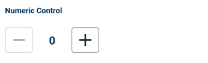
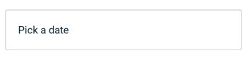
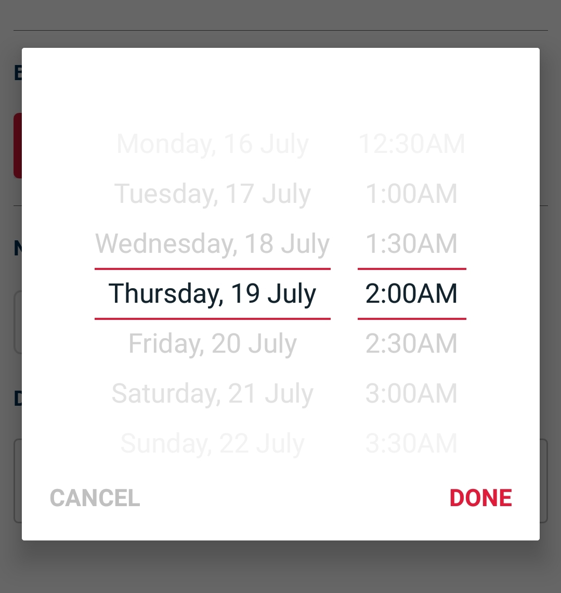

This is the Kaodim android design bootstrap documentation for setting up and maintaining Kaodim shared UI components
Follow the GitHub guide to install Jekyll on your computer. The big steps are:
{% highlight bash %} $ apt-get install ruby ruby-dev $ gem install bundler $ git clone git://github.com/mistic100/jekyll-bootstrap-doc $ bundle install $ bundle exec jekyll serve {% endhighlight %}| Name | Hex Code |
|---|---|
| Jasper | #ED193A |
| Firefly | #003158 |
| Name | Hex Code |
|---|---|
| Lima | #2ECC71 |
| Narvik | #EBFFF3 |
| Celestial | #3498DB |
| Sunglow | #FDB813 |
| Porcelain | #FFFFFF |
| Mystic | #F5F6F8 |
| Heather | #DEE1E5 |
| Submarine | #ADB5BD |
| Raven | #9FA4A6 |
| Flint | #707070 |
| Blackpearl | #12232E |
All typography formats have been declared in the styles.xml file
Re-usable Custom Android UI Components that are added to the XML layout and optionally controlled by the code-behind.
Commonly used for Numeric and Multi Numeric Questions where a numeric increment and decrement option is given for numeric input selection.
 {% highlight xml %}A custom Date and Time selection control with customizable behavior controls for toggling cycle effect, atmospheric effect, etc.
Date Time Picker Component
A picker component will be added to the interface and upon tapping this component, the date time picker dialog will be called.
Date Time Picker Dialog
 {% highlight xml %}Initializing DateTimePicker
It is important to callinitialize(activity) before using the DateTimePicker as the calling activity is necessary to call the DateTimePickerDialog.
Setting DateTimeChangedListener
A callback with the selected date and time is made if a DateTimeChangedListener is set to the DateTimePicker component after initializing
{% highlight java %} dateTimePicker.setDateTimeChangedListener(new DateTimePicker.DateTimeChangedListener() { @Override public void onDateTimeSelected(String selectedDate, String selectedTime) { } } {% endhighlight %} Or if the activity/fragment implements it, set the DateTimeChangedListener like this: {% highlight java %} dateTimePicker.setDateTimeChangedListener(this); {% endhighlight %}InteractivePanel allows you to set a custom text and receive onClick callbacks from it. This can be used as a replacement for a selection button.
{% highlight xml %}Code level
{% highlight java %} InteractivePanel ipAddDateField = holder.itemView.findViewById(R.id.ipAddDateField); ipAddDateField.setHint(mContext.getResources().getString(R.string.add_an_alternative_date)); {% endhighlight %}Set Listeners
Set a listener using: {% highlight java %} ipAddDateField.setPanelInteractedListener(); {% endhighlight %}